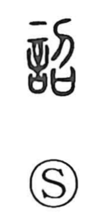

詔

Kun: mikotonori | On: sho
imperial edict ・ decree ・ proclamation
Explanation
詔 is a phono-semantic character built with the speech element 言 and the component 召. In ancient forms, 召 depicts a ritual scene centered on a sai, a covenant vessel that held written prayers offered to the gods, at which the spirit of the dead was called down in response. With 言 indicating speech, 詔 names the act of proclaiming the message received from that summoned spirit. From this notion of divine announcement, the word came to signify the earthly pronouncement of the Son of Heaven—the sovereign’s command, an imperial edict.